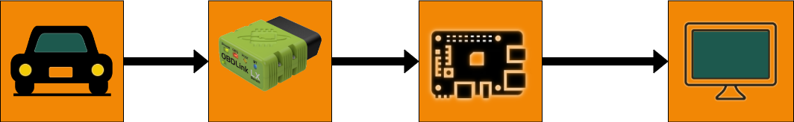
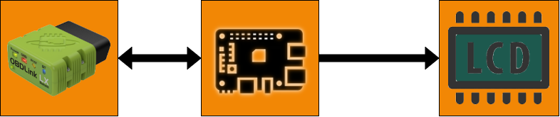

Speeddash
Speeddash
Hallo,
ik ben Joren Heyvaert,
18 jaar en woonachtig te Londerzeel.
Ik ben in het secundair onderwijs afgestudeerd in de richting
Elektromechanica. Momenteel ben ik student aan Thomas More hogeschool
in Sint-Katelijne-Waver,
waar ik de richting
application development eerste fase volg.
Weer een nieuw begin en een nieuwe uitdaging!
Een digitaal dashboard creëren is ons project.
Gezien er toch nog veel 'oude' wagens rondrijden zonder digitaal dashboard,
willen wij dé oplossing aanbieden! Zelfs ééntje dat iedereen kan installeren.
In deze hedendaagse tijd is het aangenaam en misschien noodzakelijk om deze functies in de wagen te hebben.
Hardware
klik voor extra informatie over de hardware
Software
klik voor extra informatie over de software
Hardware
Als we van links naar rechts kijken zien we als eerste de auto, vervolgens OBD Link, daarna de raspberry pi en als laatste het LCD scherm.
We hebben een rechtstreekse verbinding tussen de auto en de OBD Link.
Dan hebben we een denkbeeldige verbinding tussen de OBD Link en de raspberry pi.
Waarom denkbeeldig?
Dit is omdat de verbinding hier via bluetooth verloopt.
Vervolgens is er een fysieke verbinding (met draden) tussen de raspberry pi en het LCD scherm.
Software
Als we van links naar rechts kijken zien we als eerste de OBD Link, als tweede de raspberry pi en als laatste het LCD scherm.
We moeten via de software de informatie van de OBD Link (auto) naar de raspberry pi zien te krijgen.
Daarna moet op zijn beurt de raspberry pi verbinding zien te maken met de OBD Link.
Uiteindelijk moet de raspberry pi de informatie van de OBD Link naar het LCD scherm sturen zodat we het kunnen aflezen.